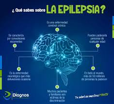
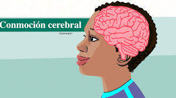

QUÉ SON
Una conmoción cerebral es una alteración temporal de la función
cerebral causada por un golpe o sacudida fuerte en la cabeza, que
afecta el sistema nervioso, manifestándose con síntomas como dolor
de cabeza, confusión, mareos, problemas de memoria, visión borrosa y
sensibilidad a la luz/ruido; puede aparecer inmediatamente o días después,
requiere reposo y retorno gradual a actividades, y
aunque es leve, puede tener efectos duraderos.
Síntomas comunes
Físicos: Dolor de cabeza, náuseas, vómitos, mareos, fatiga, problemas de equilibrio, zumbido en los oídos, cambios en la vista.
Cognitivos: Confusión, amnesia (no recordar el evento), dificultad para concentrarse, problemas de memoria.
Emocionales/Conductuales: Irritabilidad, ansiedad, depresión, sensibilidad a la luz y al ruido, cambios de humor, sentir tristeza o nerviosismo.
Del sueño: Dormir más o menos de lo habitual, insomnio.
Causas y mecanismos
Reposo: Es fundamental el descanso físico y mental, evitando actividades que requieran concentración.
Provoca una disfunción temporal de las células cerebrales, aunque no siempre se detecta en pruebas de imagen como TC o RMN.
Puede desencadenar una respuesta inflamatoria que afecta múltiples sistemas, incluyendo el intestino y el sistema nervioso autónomo.
Recuperación y tratamiento
Reposo: Es fundamental el descanso físico y mental, evitando actividades que requieran concentración.
Retorno gradual: Reanudar actividades lentamente, bajo supervisión médica.
Atención médica: Es crucial buscar atención para un diagnóstico correcto y plan de manejo,
especialmente si los síntomas persisten (Síndrome Post-Conmocional).
Prevención
Usar equipo de protección (cascos) en deportes y actividades de riesgo.
Educar sobre los riesgos y la importancia de la seguridad
Adaptar entornos para reducir caídas (barandas, eliminar obstáculos).

